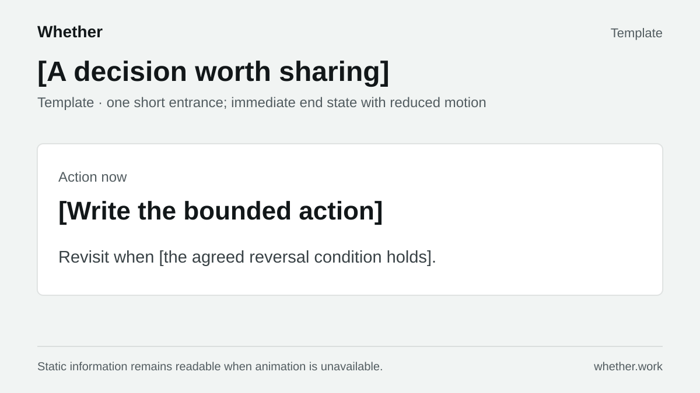

Decision reveal · Template
One 180ms entrance using opacity and transform. Reduced motion shows the finished artifact immediately. Reload to preview again.

One 180ms entrance using opacity and transform. Reduced motion shows the finished artifact immediately. Reload to preview again.
